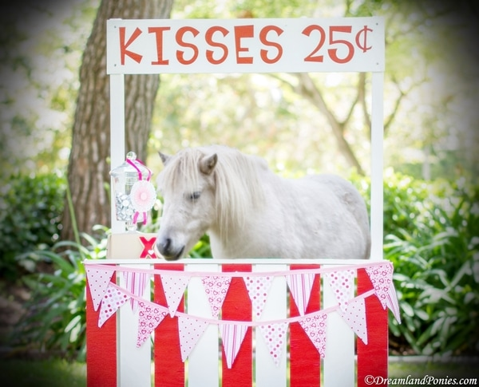
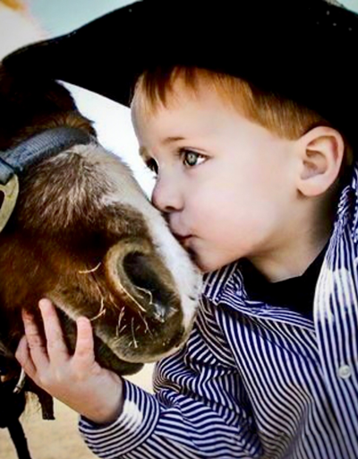
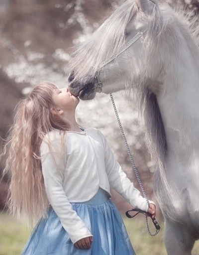
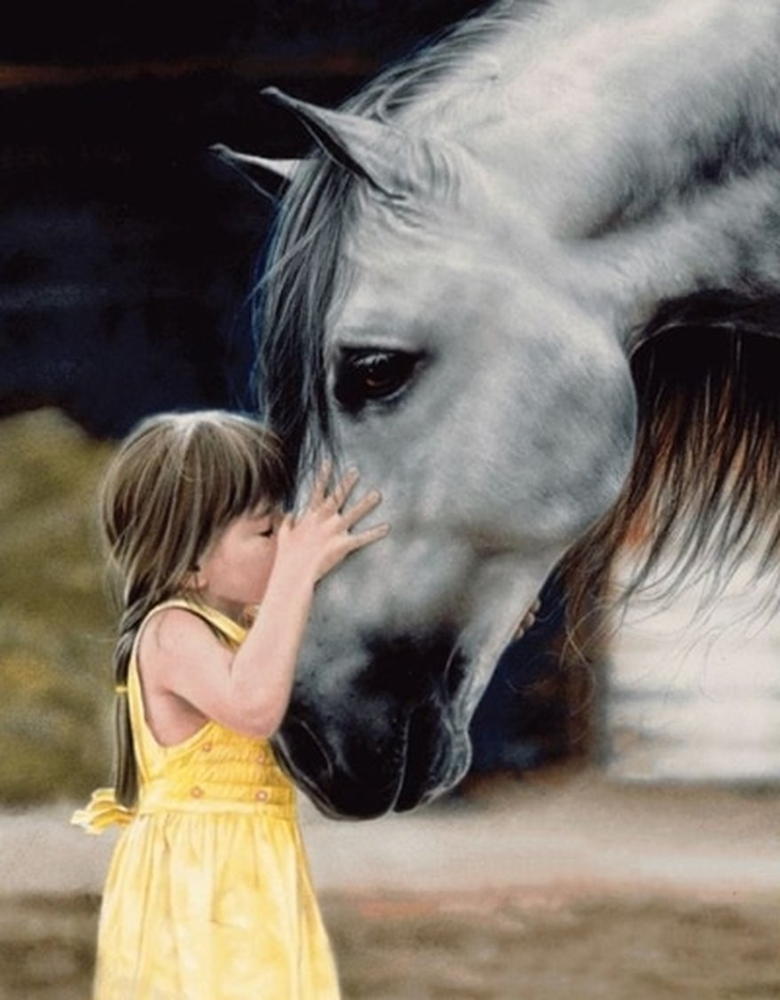

Kiss a Pony!
Who wouldn't want to kiss a pony? People love ponies, and they love kissing ponies! For that reason, we have two fantastic options for kissing a pony... For your school, company or favorite charity to make money! Our ponies are for hire by the hour for Kiss a Pony events… Just simply select which "Kiss a Pony" event you want to use, and then Contact Us for a quote and how we can help!
OPTION ONE: PONY KISSING BOOTH!
A kissing booth can attract a lot of attention to your cause! This is a pretty simple fundraiser. Just like the old human kissing booths, you can charge $ for a kiss; you can sell photos kissing a pony with our fantastic Pony Kissing Booth, or you can do both!
Where to set up a Pony Kissing Booth:
A Pony Kissing Booth works well in fairgrounds, carnivals, churches, large parties; or in schools, galas or charity events as part of a fundraising drive. The kissing booth is perfect for these settings as they are already filled with your target audience: large groups of fun-seeking friends ready to spend their money!
Tips for setting up a Pony Kissing Booth:
Here are some tips to help you make the most of your kissing booth:
A kissing booth can attract a lot of attention to your cause! This is a pretty simple fundraiser. Just like the old human kissing booths, you can charge $ for a kiss; you can sell photos kissing a pony with our fantastic Pony Kissing Booth, or you can do both!
Where to set up a Pony Kissing Booth:
A Pony Kissing Booth works well in fairgrounds, carnivals, churches, large parties; or in schools, galas or charity events as part of a fundraising drive. The kissing booth is perfect for these settings as they are already filled with your target audience: large groups of fun-seeking friends ready to spend their money!
Tips for setting up a Pony Kissing Booth:
Here are some tips to help you make the most of your kissing booth:
- Pick the right venue. As mentioned above, the venue for your kissing booth is very important. You want somewhere with a great atmosphere, a lot of foot traffic and people ready to hand over their hard-earned cash.
- Pick the right people. Know your target audience. A pony kissing booth attracts people of all ages! Try getting some local celebrities involved: radio DJs, news anchors, athletes from local sports teams, the high school football team, and anyone else you can think of to make your fundraising event as big as possible!
- Advertise. For maximum profit, you need maximum impact. Put posters up around your town, school and workplace. If you can get local celebrities involved then also get them to mention the kissing booth on their radio show or news spot, and ask your local newspaper to place an advertisement too. Most importantly, make sure your signs are informative and clear. They need to show when and where the pony kissing booth will be, and who the public can look forward to locking lips with!
- Sponsorship. It’s always a great idea to get local businesses involved in charity events. Think of businesses that would be useful to your specific event. For example, talk to businesses such as local pharmacies, who could promote their brand of lip balm in return for a donation to your charity.



OPTION TWO: KISS A PONY FUNDRAISER!
This is a fundraiser that attracts a lot of attention and is tons of fun to play. People really enjoy voting for who should have to Kiss the Pony, and it raises money for your cause. A great fundraiser for both the young and old!!!!
How Does Kiss the Pony Fundraiser Work?
Kiss a pony fundraisers are pretty simple...
You’ll need to choose a person to do the honors. It will need to be someone who your audience will enjoy embarrassing, someone with a generous nature and a good-natured, willing spirit. In some fundraisers, more than one person is chosen.
You will need to advertise the event once you know who the lucky smoocher will be to get people to donate and attend the big event.
The day of, at the designated time, the kisser simply puckers up, and kisses the pony! Just wondering: Is there another way to do this fundraiser? Maybe hug the pony? You decide…
How to Make Money with Kiss a Pony Fundraiser
To make money with a kiss-the-pony fundraiser, you have a few options:
This is a fundraiser that attracts a lot of attention and is tons of fun to play. People really enjoy voting for who should have to Kiss the Pony, and it raises money for your cause. A great fundraiser for both the young and old!!!!
How Does Kiss the Pony Fundraiser Work?
Kiss a pony fundraisers are pretty simple...
You’ll need to choose a person to do the honors. It will need to be someone who your audience will enjoy embarrassing, someone with a generous nature and a good-natured, willing spirit. In some fundraisers, more than one person is chosen.
You will need to advertise the event once you know who the lucky smoocher will be to get people to donate and attend the big event.
The day of, at the designated time, the kisser simply puckers up, and kisses the pony! Just wondering: Is there another way to do this fundraiser? Maybe hug the pony? You decide…
How to Make Money with Kiss a Pony Fundraiser
To make money with a kiss-the-pony fundraiser, you have a few options:
- Sell voting rights. Charge a set fee for a right to vote for who has to kiss the pony. There is no limit to the amount of votes a person can buy. Choose several potential kissing candidates that your crowd would like to see in the hot seat. You can continually update the public as to who is in the lead to motivate people to vote.
- Admission fee. Who wouldn’t pay a few bucks to see their favorite prominent figure a kiss from a pony?
- Advertising. Offer local businesses advertising space, or ask them to somehow sponsor the event.
- Side-shows. Hold the kissing as the main event (with or without admission) and take advantage of the crowd to fundraise in other ways, such as selling food and refreshments, raffles, on-hand product sales, event hats and t-shirts, etc.
- Collection plate. Take up a collection and agree that the subject (or a secondary volunteer) gets a second kiss if the group can reach a goal amount (of course, all donations are non-refundable if the goal is not met). Alternatively, the deal could be that the pony only gets kissed when a goal amount has been reached
Of course, you can modify the kiss-the-pony fundraiser in any way that suits your group and your public. This crazy and fun fundraising idea will bring out the crowds for some good-hearted public belittling.
- Side-shows Hold the kissing as the main event (with or without admission) and take advantage of the crowd to fund-raise in other ways, such as selling food and refreshments, raffles, on-hand product sales, event hats and t-shirts, etc.